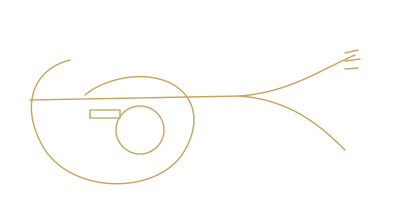

A carved mahogany-and-maple single-cutaway built for players who want weight, warmth, and sustain behind every note. A modern take on a timeless shape.
| Body | Mahogany with carved AAA flame or quilt maple top |
| Neck | Mahogany set neck, glued dovetail joint, deep access heel carve |
| Fretboard | Ebony or rosewood, 22 medium-jumbo frets, 12" radius |
| Scale Length | 24.75" |
| Pickups | Obsidian hand-wound humbucker pair, 4 push-pull coil taps |
| Hardware | Tune-o-matic bridge, stop-bar tailpiece, locking tuners |
| Finish | Hand-sprayed nitrocellulose gloss or vintage amber burst |
| Weight | Approx. 8.4–9.1 lbs |
| Case | Hardshell case included |
Top wood grade, burst color, pickup voicing, binding, and inlay work can all be tailored to your taste.
Configure The Vantage